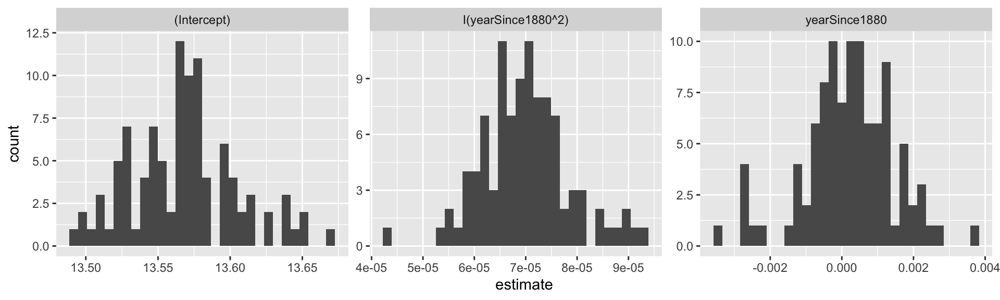

2.4 Bootstapping with linear regression
Hopefully you can see how much more useful the bootstrap is in terms calculating sample statistics. Another neat application of the bootstrap is determining and expands the provenance of the data. A key goal is to get at the population level parameters, rather than the data level parameters. Can we use this as a modeling tool? - YES!
In this case, the “population” represent the distribution on possibilities of parameters. A set of measurements is a sample of these parameters. What we can do is a bootstrap sample for the temperature data, fit a quadratic function to each of the new datasets, and then look at the distribution in parameter values.
We are going to return to our example of the global temperature dataset from Section ??, and do the following steps:
- Do a bootstrap sample of the data 100 times.
- With each sample, fit a quadratic function.
- Following each fit, examine the histogram of each fitting coefficient.
Here is how we can do this in with the command bootstrap from the modelr pacakge:
# Define the regression formula
regression_formula <- globalTemp ~ 1 + yearSince1880 + I(yearSince1880^2)
# Generate the bootstrap samples
boot <- modelr::bootstrap(global_temperature, n=100)
# You might not need to modify this code as much
models <- map(boot$strap, ~ lm( regression_formula, data = .))
tidied <- map_df(models, broom::tidy, .id = "id")
# Make the histogram. We will make a facetted plot
ggplot(data=tidied) +
geom_histogram(aes(x=estimate)) +
facet_wrap(~term,scales="free")## `stat_bin()` using `bins = 30`. Pick better value with `binwidth`.
There several new elements of this code, so let’s break this down bit by bit:
- The code
boot <- modelr::bootstrap(global_temperature, n=100)creates 100 bootstrap samples of theglobal_temperaturedataset. The listboothas two entries: (1).idwhich is a reference (1 to 100) of a particular bootstrap sample and (2)strapwhich contains the information about the bootstrap sample. - The next portion of the code applies the
mapcommand (similar tomap_df) to first compute the linear regression for each bootstrap sample. The linear regression fits are stored in the data framemodels. - Finally we extract out the information about parameters using the command
tidyfrom thebroompackage. The data frametidiedis organized by the bootstrap sample.idand has several columns, but we are going to focus on two of them:estimate, which tells you the numerical value of the coefficient in the columnterm. Other information about error estimates and statistical significance are included. - In our histogram’s horizontal axis we want to plot the value of the quantitative variable
estimate.
- You should see an interesting plot here. We are facetting the histograms by the coefficients of the histogram (hence the term
facet_wrap(~term,scales="free"), which says “plot a histogram for each variable in the column term.” We usescales="free"because each coefficient has a different range of values. (You can see the difference if you removescales="free"from the plotting command.)
Figure ?? is an example of a “small multiples” plot - the title of the plot is the value of the coefficient multiplying each term:
| Small multiple title | Coefficient of \(T=a + bY + cY^{2}\) |
|---|---|
Intercept |
\(a\) |
yearSince1880 |
\(b\) |
I(yearSince1880^2) |
\(c\) |
Notice that with the bootstrap we can get information about the distribution of the estimated parameters, which includes the median and the 95% confidence interval. This is super useful in reporting results from parameter estimates.
The idea of sampling with replacement, generating a parameter estimate, and then repeating over several iterations is at the heart of many computational parameter estimation methods. Such an approach helps make non-linear problems more tractable.
While we did a bootstrap parameter estimate on a quadratic function, this also works for a log transformation of a dataset, as with the phosphorous dataset of algae and daphnia we have studied previously. You will investigate this in one of the homework exercises.
This section extended your abilities in R by showing you how to generate histograms, sample a dataset, and compute statistics. The goal here is to give you examples that you can re-use in this section’s exercises. Enjoy!